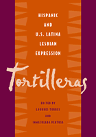

<body bgcolor="#FFFFFF" text="#000000" link="#0000FF" vlink="#CC0000" alink="#CC0000"><center><hr width="350" size="1" align="center" noshade>Latina and Latin American lesbian culture made visible<hr width="350" size="1" align="center" noshade><p><a href="https://cdcshoppingcart.uchicago.edu/Cart/ChicagoBook.aspx?ISBN=9781592130061&&PRESS=temple" target="_top">Buy this book!</a> | <a href="https://cdcshoppingcart.uchicago.edu/Cart/Cart.aspx?PRESS=temple" target="_top">View Cart</a> | <a href="https://cdcshoppingcart.uchicago.edu/Cart/Cart.aspx?PRESS=temple" target="_top">Check Out</a></p><p></p></center><!--none//--><h1>Tortilleras</h1>
<H2>Hispanic and U.S. Latina Lesbian Expression</H2>
<h3>edited by Lourdes Torres and Inmaculada Perpetusa-Seva</h3>
<P>cloth 1-59213-006-2 $84.50, Jan 03, <FONT COLOR=#990033>Available</FONT>
<br>paper 1-59213-007-0 $32.95, Feb 03, <FONT COLOR=#990033>Available</FONT>
<BR> 288 pp
7x10
</P><BLOCKQUOTE><I>"</I>Finalmente<I>, the hole in the canon has been filled by </I>Tortilleras<I>, a book as fierce as the women it chronicles from the 17th century Catalina Erauso who passes as a man in Peru to the 21st century writer extraordinaire and political activist in the U.S. Cherrie Moraga. </I>Exelente!<I>"</I>
<br>&#151<b>Carmelita Tropicana</b> is an Obie award winning Performance Artist and writer of <I>I, Carmelita Tropicana - Performing Between Cultures</I><I></I></BLOCKQUOTE>
<p>The first anthology to focus exclusively on queer readings of Spanish, Latin American, and US Latina lesbian literature and culture, <I>Tortilleras</I> interrogates issues of gender, national identity, race, ethnicity, and class to show the impossibility of projecting a singular Hispanic or Latina Lesbian. Examining carefully the works of a range of lesbian writers and performance artists, including Carmelita Tropicana and Christina Peri Rossi, among others, the contributors create a picture of the complicated and multi-textured contributions of Latina and Hispanic lesbians to literature and culture. More than simply describing this sphere of creativity, the contributors also recover from history the long, veiled existence of this world, exposing its roots, its impact on lesbian culture, and, making the power of lesbian performance and literature visible.
<BR>&nbsp;<h2>Excerpt</h2><P>Excerpt available at <a href="http://www.temple.edu/tempress">www.temple.edu/tempress</a></p>
<BR>&nbsp;<h2>Reviews</h2>
<p><I>"</I>Tortilleras<I> is a landmark collection. It fosters a necessary and meaningful dialogue between feminist scholars in U.S. Latina and Latin American studies grappling with questions of lesbian representation in literary and visual culture. Torres and Pertusa have compiled a timely volume that richly complicates previous debates and energetically maps new directions for the future. This most vital book shows how studies in gender and sexuality must lie at the heart of our work."</I>
<br>&#151<b>Tiffany Ana Lopez</b>, University of California, Riverside
<p><i>"This anthology pushes us to think beyond the margins of repression in fiction and nonfiction queer literature and culture and art and film. Once you look through </i>Tortilleras<i>, you'll be compelled to look for the work these scholars are reviewing and see if your examination compares....[it] is the first anthology of its kind to open a vein and say, 'Here,' to our LGBT community, scholars, and students."</i>
<br>&#151<b><i>Lambda Book Report</i></b>
<p><i>"...groundbreaking...pioneering in many ways...challenges patterns of marginalization, offering a fascinating, critical approach to the obscured and vital reality of Latina lesbian identity, agency, difference and otherness."</i>
<br>&#151<b><i>Multicultural Review</i></b>
<p><i>"The most striking feature of this anthology is the vast terrain it traverses; ... </i>Tortilleras<i> establishes valuable new frames for study in this field."</i>
<br>&#151<b><i>symploke</i></b>
<p><i>"[The book] is an important and innovative addition to this corpus... [it] will no doubt provoke new conversations and new research in a number of fields."</i>
<br>&#151<b><i>The Arizona Journal of Hispanic Cultural Studies</i></b>
<BR>&nbsp;<h2>Contents</h2><P>
<p>Acknowledgments
<br>Introduction &#150 Lourdes Torres
<p><b>Part I: coming Out/Covering Up</b>
<br>1. From the Margins to the Mainstream: Lesbian Characters in Spanish Fiction (1964-79) &#150 Wilfredo Hern�ndez
<br>2. Carme Riera: (Un)Covering the Lesbian Subject or Simulation of Coming Out? &#150 Inmaculada Pertusa
<br>3. Tomboy Tantrums and Queer Infatuations: Reading Lesbianism in Magali Garc�a Ramis's <i>Felices D�as, T�o Sergio</i> &#150 Lawrence La Fountain-Stokes
<br>4. Coming-Out Stories and the Politics of Identity in the Narrative of Terri de la Pe�a &#150 Salvador C. Fern�ndez
<p><b>Part II: (Re)presenting Lesbian Desire</b>
<br>5. Silent Pleasures and Pleasures of Silence: Ana Mar�a Moix's "Las Virtudes Peligrosas" &#150 Nancy Vosburg
<br>6. Reading, Writing, and the Love that Dares Not Seak Its Name: Eloquent Silences in Ana Mar�a Moix's <i>Julia</i> &#150 Gema P�rez-S�nchez
<br>7. Outside the Castle Walls: Beyond Lesbian Counterplotting in Cristina Peri Rossi's <i>Desastres �ntimos</i> &#150 Janis Breckenridge
<br>8. "He Made Me a Hole!" Gender Bending, Sexual Desire, and the Representation of Sexual Violence &#150 Regina M. Buccola
<p><b>Part III: Sites of Resistance</b>
<br>9. <i>Bomberas</i> on Stage: Carmelita Tropicana Speaking in Tongues Against History, Madness, Fate, and the State &#150 Karina Lissette Cespedes
<br>10. Empowering the Feminine/Feminist/Lesbian Subject Through the Lens: The Representation of Women in Mar�a Luisa Bemberg's <i>Yo, la Peor de Todas</i> &#150 Mar�a Claudia Andr�
<br>11. The Lesbian Family in Christina Peri Rossi's "The Witness": A Study in Utopia and Infiltrations &#150 Sara E. Cooper
<br>12. Chicana Lesbianism and the Multigenre Text &#150 Elisa A. Garza
<p><b>Part IV: Racialized Lesbianisms</b>
<br>13. Interracial Lesbian Erotics in Early Modern Spain: Catalina de Erauso and Elana/o de C�spedes &#150 Sherry Velasco
<br>14. Violence, Desire, and Transformative Remembering in Emma P�rez's <i>Gulf Dreams</i> &#150 Lourdes Torres
<br>15. Learning to Live Without Black Familia: Cherr�e Moraga's Nationalist Articulations &#150 Christina Sharpe
<br>16. Shameless Histories: Chicana Lesbian Fictions Talking Race/Talking Sex &#150 Catri�na Rueda Esquibel
<p>About the Contributors
</P><BR>&nbsp;<H2>About the Author(s)</H2>
<P><b>Lourdes Torres</b> is Associate Professor of Latin American/Latino studies at De Paul University.</P>
<P><b>Inmaculada Perpetusa-Seva</b> is Assistant Professor of Spanish at the University of Kentucky.</P>
<P>Contributors: Mar�a Claudia Andr�, Janis Breckenridge, Regina M. Buccola, Karina Lisette Cespedes, Sara E. Cooper, Catri�na Rueda Esquibel, Salvador C. Fern�ndez, Elisa A. Garza; Wilfredo Hern�ndez, Lawrence La Fountain-Stokes, Gema P�rez-S�nchez, Christina Sharpe, Sherry Velasco, Nancy Vosburg, and the editors.</P>
<BR><H2>Subject Categories</H2>
<p><A HREF="/tempress/sexual.html" TARGET="_top">Sexuality Studies/Sexual Identity</a>
<BR><A HREF="/tempress/women.html" TARGET="_top">Women's Studies</a>
<BR><A HREF="/tempress/latino.html" TARGET="_top">Latino/a Studies</a>
</p>
<p align="center"><a href="https://cdcshoppingcart.uchicago.edu/Cart/ChicagoBook.aspx?ISBN=9781592130061&&PRESS=temple" target="_top">Buy this book!</a> | <a href="https://cdcshoppingcart.uchicago.edu/Cart/Cart.aspx?PRESS=temple" target="_top">View Cart</a> | <a href="https://cdcshoppingcart.uchicago.edu/Cart/Cart.aspx?PRESS=temple" target="_top">Check Out</a></p><p><font face="Arial" size="1"><a href="copyright.html" onMouseOver="window.status='Web Copyright Policy';return true;" onMouseOut="window.status=''" title="Web Copyright Policy">&copy;</a> 2015 <a href="http://www.temple.edu" target="new" onMouseOver="window.status='Link to Temple University home page';return true;" onMouseOut="window.status=''" title="Link to Temple University home page">Temple University</a>. All Rights Reserved. http://www.temple.edu/tempress/titles/1574_reg.html</font></p>